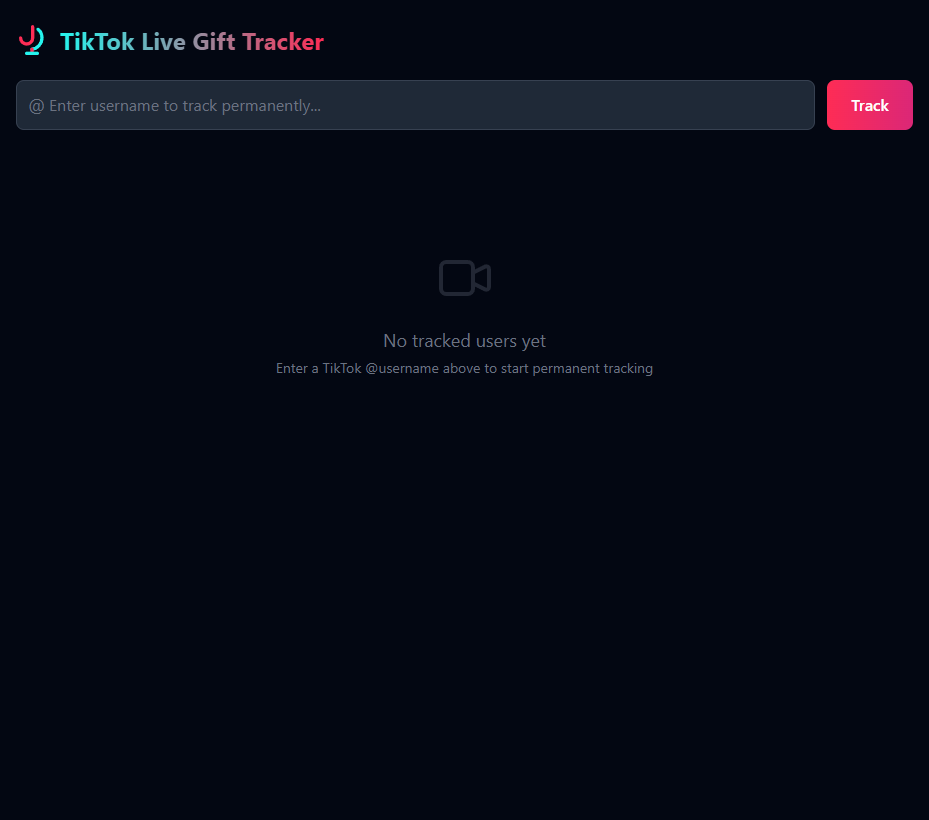
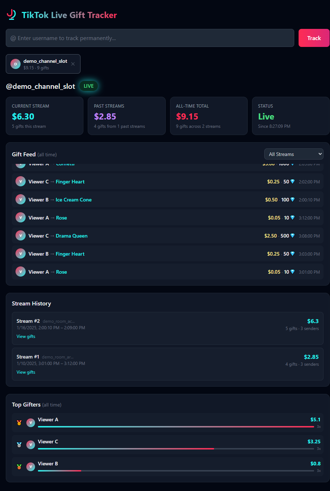

A self-hosted dashboard that captures every gift and chat message sent during a TikTok livestream. Persistent SQLite storage, auto-reconnect, multi-streamer support, and full historical data.
Illustrative captures with synthetic data only — no real TikTok usernames or live profile URLs.


Captures every gift the moment it's sent during a live stream via public TikTok WebSockets. No API keys or login required.
All data saved to SQLite with WAL mode. Browse every past stream, view gift breakdowns, and track all-time earnings. Survives container restarts.
When a stream ends, automatically reconnects with exponential backoff. Tracked users persist in the database and resume on container restart.
Track multiple TikTok users simultaneously. Each streamer gets their own independent data with separate stream IDs and earnings.
All-time leaderboard showing who donated the most, with gift counts, diamond totals, and visual progress bars.
Captures all chat messages and emotes during a stream. Browse full chat logs for any past stream, with deduplication and clear controls.
Auto-translate chat messages via LibreTranslate. Supports 49+ languages with auto-detection and a user-selectable target language dropdown.
Docker Compose with persistent volume mapping. Clone, run, done. Your data stays safe on your local drive.
Requires Docker. No TikTok account or API keys needed.
git clone https://github.com/chartmann1590/tiktok-live-gift-tracker.git
cd tiktok-live-gift-trackercp .env.template .env
# Edit .env and set LIBRETRANSLATE_URL to your LibreTranslate instanceRequires a self-hosted LibreTranslate instance. Skip this step if you don't need translation.
docker compose up -dOpen http://localhost:5000Enter a TikTok @username who is currently live. The dashboard will begin tracking gifts immediately.
All data accessible via simple REST endpoints.
/api/listen
Start tracking a user
/api/listen/<user>
Stop tracking
/api/tracked
All tracked users + stats
/api/earnings/<user>
Stream + historical + all-time
/api/gifts/<user>
Gift feed (all or per-stream)
/api/streams/<user>
All recorded streams
/api/top-gifters/<user>
Top gifters leaderboard
/api/chat/<user>
Chat messages (all or per-stream)
/api/chat/<user>
Clear chat logs
/api/translate
Translate text (auto-detect)
/api/translate/languages
Supported languages
TikTok Live Gift Tracker is 100% free and open source (MIT). No subscriptions, no API keys, no tricks — just a solid dashboard you can self-host.
Building and maintaining it takes real time: keeping up when TikTok changes behavior, polishing the UI, writing docs, and answering issues. If this project saves you time or helps your stream or business, tips on Buy Me a Coffee go straight into that work. One-time or monthly — every cup helps.
Buy Me a Coffee · secure payment · thank you for supporting independent OSS
The app uses the TikTokLive library to connect to TikTok's public WebSockets. No authentication, API keys, or webhooks needed.
# Architecture overview
Flask (web server, main thread)
├── Serves the single-page dashboard
├── REST API endpoints for data queries
│
├── Background Thread #1 (asyncio event loop)
│ └── TikTokLiveClient("@user1") → GiftEvent + CommentEvent → SQLite INSERT
│
├── Background Thread #2 (asyncio event loop)
│ └── TikTokLiveClient("@user2") → GiftEvent + CommentEvent → SQLite INSERT
│
└── SQLite (WAL mode) — persistent gift + chat history